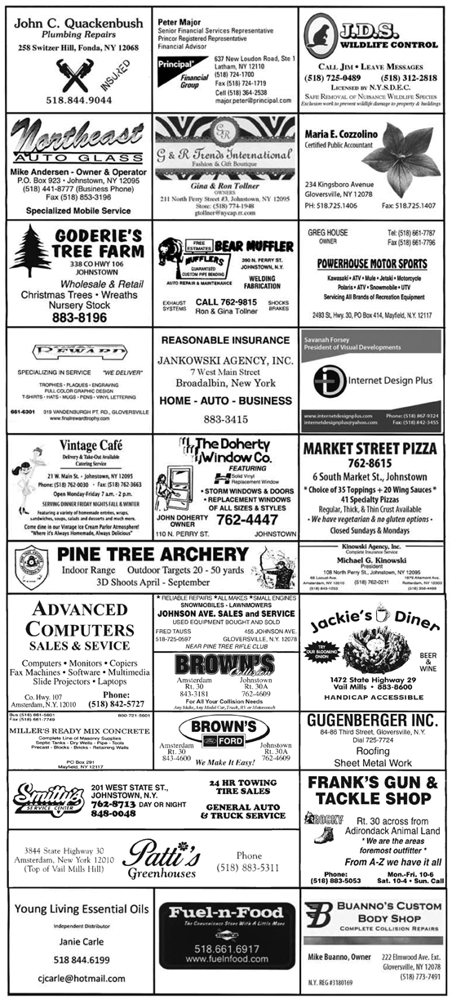

FROM PTRC President Paul Catucci
Hello All,
Hope everyone is well. I know I for one would like to see a little better weather, sick of cold and snow! Dues are overdue, we have about 140 full members, and 16 junior members late at this point. Late chargers are in effect. We hate to do it but many of the delinquent members will not be members of PTRC soon. If you have questions or concerns, contact Steven.
Our annual swap shop is schedules April 26th, 2015 @ 9:00AM and 2:00PM. Tables are still available for the same cost as last year, $10.00 for club members and $15.00 for non-members. The cost of the show is also the same as last year $5.00 admission, with $2.00 with every paid admission going to the Leather Stocking Honor Flight. Last year we raised $1000.00 to send some of our Veterans to Washington. Nick pushed the jug around every event and worked hard to help our WWII Vets see their Memorial. We are proud to help this great organization!
Tickets for the annual raffle are now available. If you would like tickets to sell see Paul or Paul any Monday night at the club or at any club function. There are two rules changes for this year. One, we are only giving out a maximum of 25 tickets at a time. As stubs and money are turned in more tickets will be handed out. This was done in an effort to avoid having several hundred tickets turned in the last day. Second, only the top seller will get a cash prize, not the top three. You can still earn free dues by selling 40 tickets.
We are in some serious trouble in this country. I am not saying revolution, just saying we need to change. We need to write congress, our senate, tell them how you feel. Talk to non gun owners, they don't understand what's going on. Educate them, educate your family and friends. I love the flag, I love our country, I respect our Military and Veterans. I know sacrifice. I am afraid what I see now. I don't trust our leaders. We all heard the phrase "if Guns were outlawed, only outlaw's would have guns". True, true, true, law abiding citizens will not have guns but criminals still will. Yes I believe, "the only way to stop a bad guy with a gun is a good guy with a gun." Not saying it's about guns, it's about rights. Protect your rights, wake up or the country we all love will be gone. The world is a scary place. Preserve freedom. Support groups that think like you, support leaders that you trust. Vote, get involved. Be part of the solution, not the problem. I posted the above on our facebook page, I feel strongly we need to wake up. It is up to us.
SHOOTERS COMMITTEE ON POLITICAL EDUCATION or SCOPE will hold a meeting at our club on March 27th, 2015 at 7:00PM. Everyone is welcome to attend. they have a website www.scopeny.org, If you would like to see what they are all about. This is a new chapter in Fulton County. At this meeting they will also be electing officers. If interested be at the club, come see what they are all about.
We are still looking for sponsors for our K9 tee shirt this year, Your name on 125 shirts for just $100.00 donation for the K9 unit of the Sheriff's Department. We will have our pins out soon for just $5.00. We raised over $6000.00 for the K9's last year. If you would like to help contact Paul.or Peter Tautznik. Peter is once again Ride Chairman.
Our next club meeting is March 11th @ 7:00PM and April 8th. Club suppers will be March 18th @6:30PM and April 15th. Please sign up in advance for supper. Support all club sponsors, we appreciate your support.
Contact information, Paul Catucci (518) 762-2921 or paul.catucci@gmail.com.
